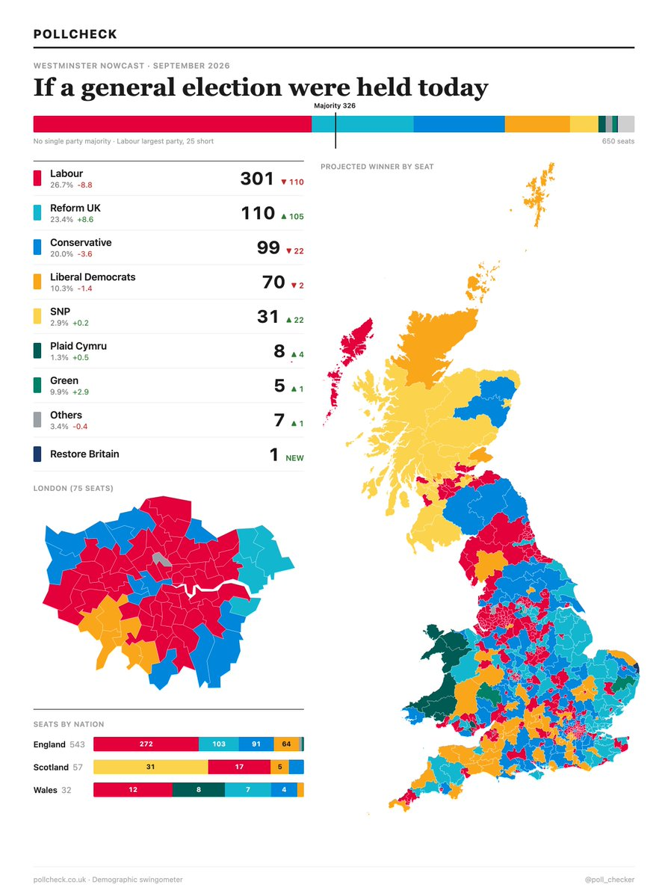

𝐀𝐬𝐡𝐥𝐞𝐲 𝐁𝐥𝐨𝐜𝐤🍥🌹🇹🇼🏳️⚧️🇪🇺
@bolckAshley
@nande198900 你說的對
但是英國工黨依然堅挺😹

某人的第五个号
@nande198900
那就别怪别人选伊斯兰首相了😁 https://t.co/TbDKdSU9SH
PollCheck
@poll_checker
Labour over 300 seats in the seat trend for the first time since January 2025:
Labour: 301 (-110) 26.7% (-8.8)
Reform UK: 110 (+105) 23.4% (+8.6)
Conservative: 99 (-22) 20.0% (-3.6)
Liberal Democrats: 70 (-2) 10.3% (-1.4)
SNP: 31 (+22) 2.9% (+0.2) https://t.co/oG3yA9yw97